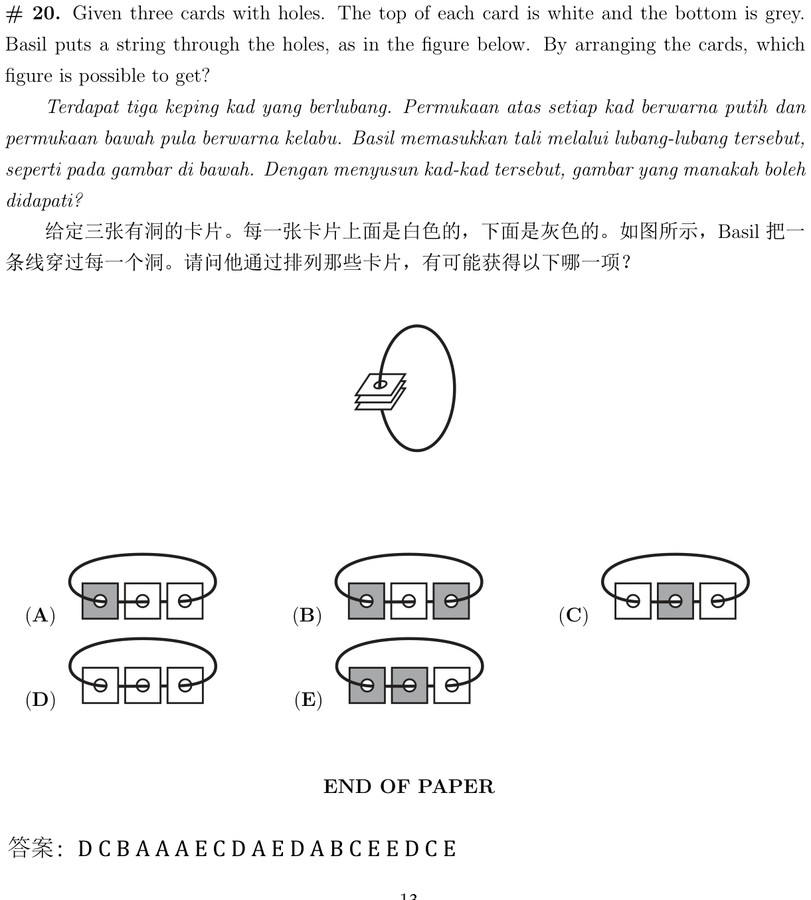
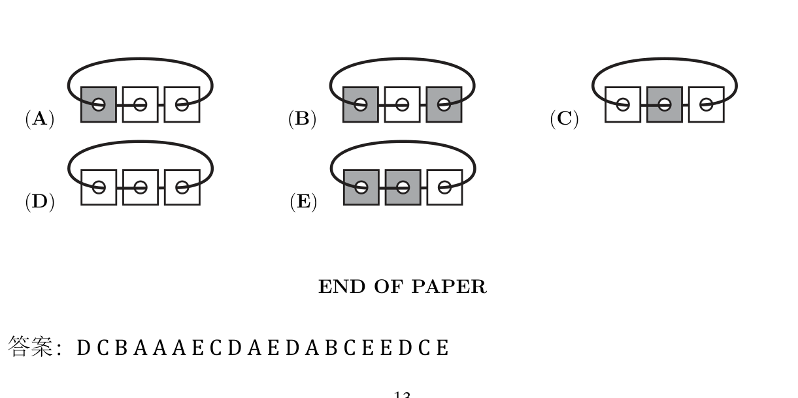

给定三张有洞的卡片。每一张卡片上面是白色的，下面是灰色的。如图所示，Basil 把一 条线穿过每一个洞。请问他通过排列那些卡片，有可能获得以下哪一项？
Given three cards with holes. The top of each card is white and the bottom is grey. Basil puts a string through the holes, as in the figure below. By arranging the cards, which figure is possible to get?


先思考，再选答案（检查只提示对错）：
Think, then pick (Check only says right/wrong):